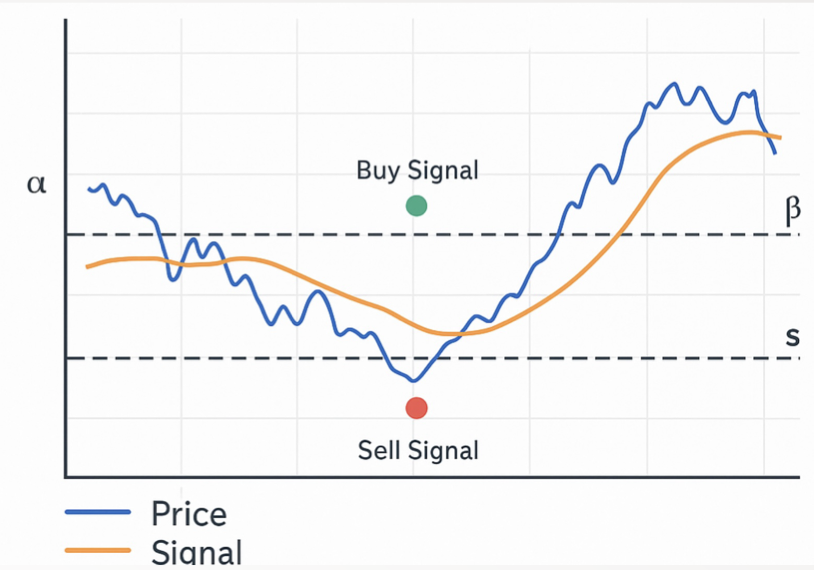
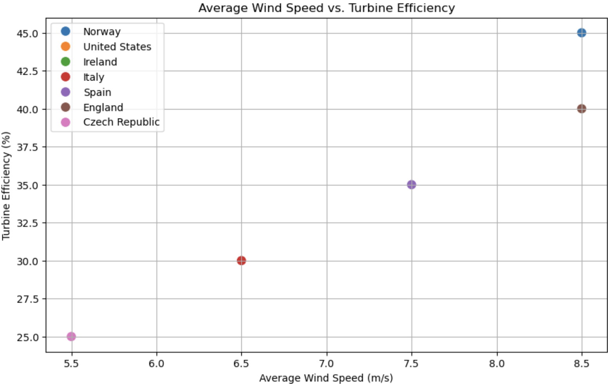
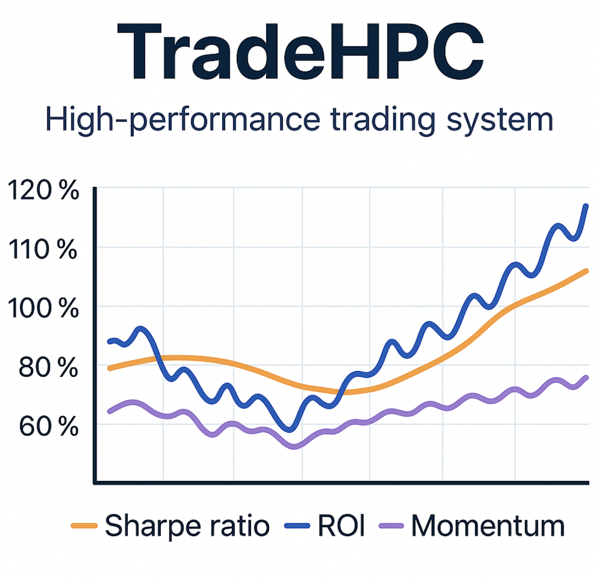

Quantitative Modeling and Simulation
Engineering Models, Optimization, and Comparison of Algorithmic Trading
Independent research project modeling financial strategies with calculus-based signal generation and real-time performance benchmarking.
Project Details
This project investigates whether structured, engineering-based techniques can outperform passive benchmarks in algorithmic trading.
Research Objectives:
- Apply mathematical modeling and calculus to extract actionable structure from market data
- Develop a signal generation system using slope and acceleration of price curves
- Optimize entry/exit thresholds for dynamic market regimes
- Benchmark performance against passive strategies like SPY and QQQ
- Uses Savitzky–Golay filters to smooth price curves while preserving turning points
- Computes first (slope) and second (curvature) derivatives to detect inflection trends
- Applies threshold logic to trigger trades based on derivative magnitude and direction
- Performs backtests with Sharpe ratio, drawdown, ROI, win rate, and trade count
- Benchmarked against SPY buy-and-hold to assess relative edge
- Real-time ticker selection and signal overlay via Streamlit
- Moving slope and acceleration visualizations
- Heatmap-based parameter optimization with adjustable entry/exit zones
- Walk-forward validation and fold-specific Sharpe analysis
- Trade log download and performance history export
Wind Turbine Impact Study: Monte Carlo Forecasting
Data-driven simulation assessing the impact of wind turbines on renewable energy capacity in the U.S. and Europe.
Project Details
Built as part of the Data-Driven Decisions course, this project evaluates the variability and potential of wind energy using Monte Carlo simulation.
Study Goals:
- Model uncertainty in wind turbine output across different regions
- Compare U.S. renewable capacity to Germany, Denmark, and the UK
- Project renewable potential under optimistic and policy-driven scenarios
- Visualize distributions, outliers, and projected capacity curves
- Generated thousands of wind output scenarios using Monte Carlo simulation in Python
- Used numpy.random.normal to represent wind performance variability
- Compared real-world vs. theoretical performance using histograms and overlaid mean curves
- Incorporated region-specific assumptions about capacity, wind strength, and policy ambition
- U.S. performance lags behind Europe due to underutilization and slower growth rate
- Monte Carlo results quantify uncertainty and help guide future energy investment decisions
- Supports policy discussions on renewables by grounding them in statistical simulation
TradeHPC: High-Performance Rust Engine for Predictive Market Modeling
A modular trading engine written in Rust, simulating high-speed financial computation pipelines for backtesting and predictive modeling.
Project Details
This project simulates the backbone of a high-frequency or signal-based trading system, using Rust for performance and system control.
Core Capabilities:
- Models how a real-time engine ingests and processes synthetic market data
- Performs intensive floating-point computation using array simulation logic
- Prints dynamic output such as simulated Sharpe ratios and momentum scores
- Exposes a clean modular architecture via main.rs, gpu.rs, and mod.rs
- Simulates compute-heavy tasks typical in quantitative research or order execution
- Structured to be extensible — future GPU acceleration and real-time integration possible
- Demonstrates strong command of systems-level performance techniques in Rust